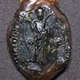
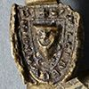
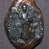
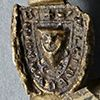

| The National Archives, E 42/386, seal 1, [county] [digisigID] | Link to TNA site |  |
|---|---|---|
| The National Archives, DL 27/62, seal 1, [county] |  | |
| 3 [Document reference number], [seal number] [county] |  |
| The National Archives, E 42/386, seal 1, [county] [digisigID] | Link to TNA site | |
|---|---|---|
| The National Archives, DL 27/62, seal 1, [county] |  | |
| 3 [Document reference number], [seal number] [county] |  |